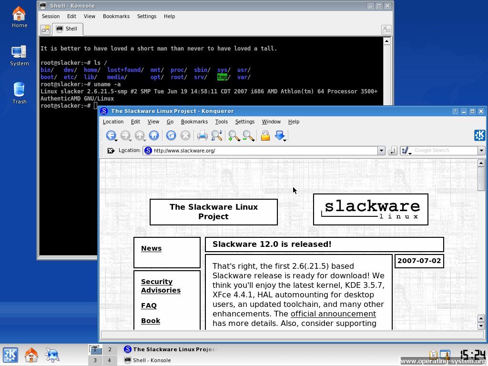
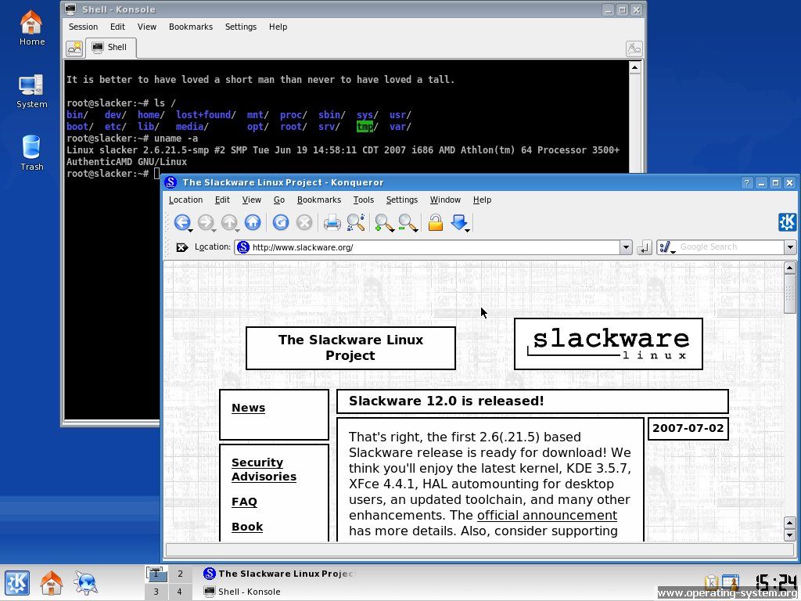

📜 Початки: UNIX і пошук відкритості
Linux — один із найяскравіших прикладів вільного програмного забезпечення з відкритим кодом. Її витоки сягають початку 1990-х, хоча фундамент був закладений ще у 1969 році з появою UNIX у Bell Labs. UNIX здобула популярність завдяки своїй гнучкій архітектурі, надійності та переносимості. Але згодом вона стала комерційною, що обмежило доступ до її коду — тож виникла потреба у відкритій альтернативі.
👨💻 Створення Linux
У 1991 році фінський студент Лінус Торвальдс почав працювати над власним ядром ОС. 25 серпня він оголосив про це у групі comp.os.minix. Хоча перша версія була доволі простою, відкритий код одразу зацікавив ентузіастів по всьому світу.
📂 Поєднання GNU і Linux
Ядро Linux саме по собі не є повноцінною ОС — воно лише керує «залізом». Для завершеної системи потрібні утиліти, оболонки, редактори, файлові системи тощо. Проєкт GNU, започаткований Річардом Столлманом у 1983 році, якраз і забезпечував усі ці компоненти, крім ядра. З появою Linux у 1991 році обидва проєкти об’єдналися, створивши функціональну, стабільну й повністю відкриту ОС, яку технічно коректно називати GNU/Linux. Ця комбінація лягла в основу більшості дистрибутивів.
🚀 Перші дистрибутиви
Щоб спростити встановлення та налаштування Linux, почали з’являтись перші дистрибутиви. Slackware (1993) був мінімалістичним і орієнтувався на досвідчених користувачів. Debian (1993) вирізнявся спільнотним підходом до розробки — він став основою для багатьох інших дистрибутивів, зокрема Ubuntu. Red Hat Linux (1994) фокусувався на бізнесі та започаткував корпоративну підтримку. Згодом з’явилися й інші: Mandrake, SUSE, Gentoo, а також дружніші до новачків — Ubuntu, Linux Mint тощо. Кожен дистрибутив мав свою аудиторію та ідеологію.
🖥️ Завоювання серверного сегмента
У 2000-х Linux став основною платформою для серверів. Його використовували у дата-центрах, банках, хостинг-компаніях і корпоративних мережах. Великі компанії, такі як IBM, Google і Oracle, активно підтримували Linux. Його обирали за стабільність, безпеку й гнучкість. Сервери на базі Linux можуть працювати безперервно роками, що важливо для критичних систем. Відкритий код дозволяє швидко усувати вразливості, а повний контроль над системою — адаптувати її під конкретні потреби. Також Linux легко масштабується та не потребує витрат на ліцензії — це робить його ідеальним вибором для сучасної інфраструктури.
📱 Linux і мобільні пристрої: Android
У 2008 році Google випустила Android — мобільну операційну систему на базі ядра Linux. Нині це найпоширеніша платформа для смартфонів. Linux також лежить в основі систем у телевізорах, авто, маршрутизаторах та IoT-пристроях. Вибір Linux як основи був обумовлений його стабільністю, адаптивністю та ліцензійною відкритістю. Ядро легко переносилося на ARM-архітектуру, що широко використовується у мобільних пристроях. Відкритість дозволила Google швидко вдосконалювати Android, не порушуючи прав на ПЗ.
💡 Становлення та розвиток сьогодні
Сьогодні над ядром Linux працюють тисячі фахівців з усього світу. У розробці беруть участь провідні компанії: Intel, Google, Red Hat, Canonical, Samsung. Постійно оновлюється підтримка обладнання, поліпшується безпека та стабільність.
💻 Найпопулярніші дистрибутиви
- Ubuntu — зручна для початківців, підтримується компанією Canonical.
- Fedora — сучасна, з фокусом на новітні технології.
- Debian — стабільна та надійна.
- Arch Linux — мінімалістична, для досвідчених користувачів.
- Linux Mint — дружня до користувача, схожа на Windows.
🖼️ Галерея зображень

 

🔚 Підсумок
Linux розпочався як студентський експеримент, а з часом перетворився на масштабну платформу світового рівня. Його відкритість, гнучкість та активна спільнота забезпечили йому місце в основі тисяч різних систем — від серверів до смартфонів. Це приклад того, як ідеї свободи, співпраці та технологічного поступу можуть змінити світ.